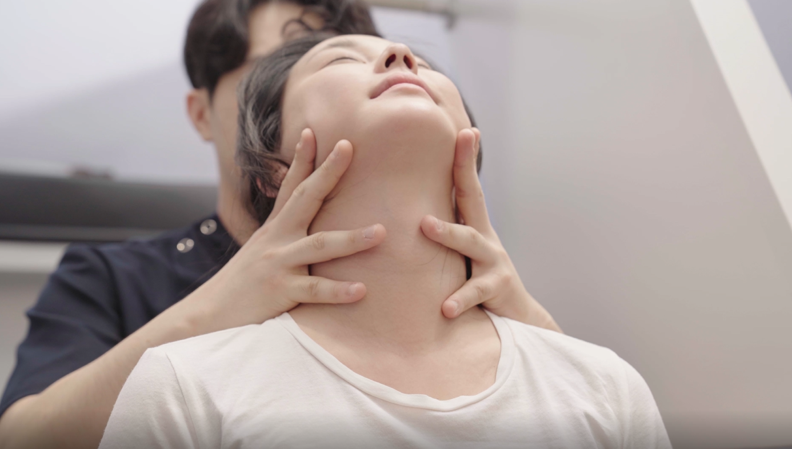

수원 교통사고 한의원 추천: 손상된 조직 회복부터 세밀한 구조 정렬까지

사고 이후 정밀 검사상 이상 소견이 없음에도 지속되는 신체 통증은 미세한 척추 정렬의 변화와 연부조직 유착에서 기인할 수 있다. 바디올한의원은 단순한 표층 근육 이완을 넘어 충격으로 어긋난 분절 구조를 바로잡는 보존적 솔루션을 제안한다. 자동차보험 적용을 통해 자부담 없이 체계적인 회복 프로그램을 진행할 수 있다.
| 바디올한의원 생체역학적 공간 감압 추나(SART Protocol)의 3가지 생체역학적 특징 | |
|---|---|
| 물리적 공간 확보 | 생체역학적 공간 감압 추나(SART Protocol)는 전통 정골의학 및 추나요법의 원리를 바탕으로 척추 분절 간의 물리적 공간을 확보하는 보존적 교정 기법으로, 충격으로 압착된 척추 분절 간의 간격을 복구하여 신경 자극 완화를 도모한다. |
| 심부 유착 해소 | 미세 도침 요법을 활용하여 충격으로 인해 단단하게 엉겨 붙은 질긴 연부조직과 근막의 유착 부위를 정밀하게 분리하고 소통시킨다. |
| 전신 밸런스 재조정 | 골반의 수평 구조부터 경추까지 연결되는 운동 사슬을 고려하여 외부 충격 여파가 특정 마디에 집중되는 역학적 과부하 현상을 차단한다. |

'평소 구조적 밸런스가 무너져 있었다면 외부 충격의 여파는 더욱 깊어집니다'
사고 직후에는 갑작스러운 충격에 따른 신체 긴장과 아드레날린 분비로 인해 통증을 즉각적으로 인지하지 못하는 경우가 많다. 그러나 시간이 흐르며 긴장이 해소됨과 동시에 편타성 손상으로 인해 미세하게 변화된 척추 정렬이 주변 신경과 연부조직을 지속적으로 자극하면서 통증이 본격화된다.
바디올한의원에서는 이러한 교통사고 후유증의 구조적 원인 개선을 도모하기 위해, 전통 정골의학 및 추나요법의 원리를 바탕으로 척추 분절 간의 물리적 공간을 확보하는 생체역학적 보존 교정 기법인 생체역학적 공간 감압 추나(SART Protocol)를 적용하여 손상된 신체 밸런스를 안정적으로 복구한다. 자동차보험 프로세스를 통해 복잡한 절차 없이 체계적인 정렬 케어에 집중할 수 있다.
⚠️ 사고 직후 진단서 발급이 중요한 이유
- 인과관계 입증: 사고 발생과 통증 발현 사이의 상관관계를 증명하는 객관적인 의료적 근거가 된다.
- 충분한 치료 기간 확보: 초기 진단 결과는 향후 지불 보증 범위 및 기간 산정의 기준이 되므로, 임상 경험을 갖춘 의료진을 통해 세밀한 검진을 진행하는 것이 바람직하다.
- 잠복 후유증 기록: 육안으로 파악하기 어려운 골반 및 척추 구조의 미세한 역학적 변화를 초기에 정밀하게 기록해 두는 것이 안전하다.
1. 바디올한의원의 구조적 단계별 회복 시스템
사고 충격으로 급성기 예민해진 신체 상태를 고려하여 단계별 맞춤 강도로 정밀 치료를 진행한다.

- 미세 구조 정렬: 편타성 충격으로 인해 척추 분절 사이가 압착되거나 미세하게 어긋난 마디를 부드럽게 복구한다.
- 근막 이완 케어: 과도하게 긴장하여 단단하게 굳어진 근육과 심부 근막을 풀어주어 국소 순환을 개선하고 신체 회복을 촉진한다.
- 초음파 정밀 진단: 한의사의 유기적인 정밀 진단을 통해 육안이나 이학적 검사만으로 확인하기 어려운 근육 파열이나 미세 염증 부위를 명확히 타겟팅한다.
2. 자동차보험 1:1 맞춤 통합 프로그램
| 치료 항목 | 상세 역할 및 회복 효과 |
|---|---|
| 어혈 한약 | 체내 미세 손상으로 인한 어혈 배출을 돕고 사고 후 동반될 수 있는 심리적 불안정 완화를 유도한다. |
| 생체역학적 공간 감압 추나(SART Protocol) | 충격으로 격동된 전신 밸런스를 복구하고 경추 및 요추의 긴장 해소를 도모한다. |
| 고농도 봉약침 | 손상 부위 심부의 염증 반응을 완화하고 세포 재생을 유도하는 보존적 치료이다. |
| 도침 요법 | 사고 여파로 엉겨 붙어 만성 통증을 유발하는 질긴 연부조직의 유착 구조를 세밀하게 정리한다. 초음파 유도 하 신경 주위 주사와 도침 요법을 병행한 임상 사례 연구에서는 국소 마취 주사만으로는 일시적 증상 완화에 그쳤으나, 도침 시술 이후 시각통증척도가 뚜렷하게 감소하고 초음파상 신경 주변 연부조직의 신호가 개선되는 결과가 보고되었다[1]. 또한 경추부 신경 자극 및 연부조직 유착 관리에 있어 도침 요법과 신경 차단술을 병행한 그룹이 신경 차단술 단독 시행군에 비해 전체 유효율에서 유의미하게 우수한 결과를 나타냈다는 체계적 문헌고찰 결과가 확인되었다[2]. |
3. 365일 야간진료로 끊김 없는 후유증 관리

바디올한의원은 수원 인계동에 위치해 있으나, 광교, 동탄, 영통 등 경기 남부 권역에서도 난치성 척추 질환의 생체역학적 교정 및 교통사고 후유증 관리를 위해 내원하는 거점 치료 기관이다. 평일 밤 8시 30분 야간진료와 주말 및 공휴일 진료를 시행하여 초기 집중 치료 시기를 놓치지 않도록 체계적인 의료 서비스를 제공한다. 건물 1층 전용 주차장 이용이 가능하며, 자동차보험 접수번호만으로 신속한 행정 절차 진행을 지원한다.
💬 교통사고 후유증 관련 자주 묻는 질문(FAQ)
사고 당시 발생한 채찍질 손상으로 인해 척추 분절의 미세한 정렬 변화가 유발되며, 초기 신체 긴장이 풀리면서 손상된 근막과 척추 주변부 신경 자극이 본격화되어 후유증 통증이 나타나게 된다.